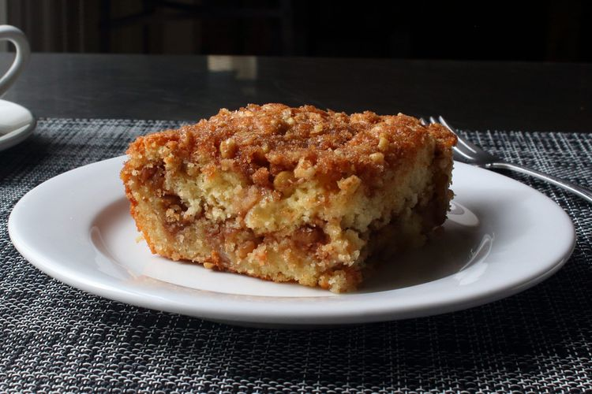
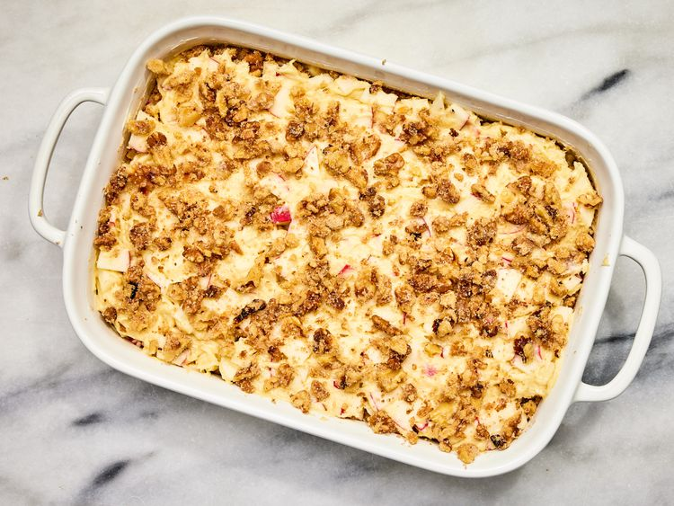

Banana Bread

Looking for a moist banana bread recipe that never fails? Your friends and family will ask for this never-dry banana bread again and again.
Ingredients
Dry Ingredients
- 2 cups all-purpose flour
- 1 teaspoon baking powder
- 3/4 teaspoon baking soda
- 1/2 teaspoon fine sea salt
Crumble Mixture
- 1 1/2 cups finely chopped toasted walnuts
- 1/3 cup packed light brown sugar
- 1/3 cup white sugar
- 3 tablespoons unsalted butter, melted
- 1 teaspoon ground cinnamon
- 1/4 teaspoon salt
Wet Ingredients
- 1 cup white sugar
- 1/2 cup unsalted butter, at room temperature
- 2 large eggs
- 1 cup plain yogurt
- 1 1/2 teaspoons vanilla extract
- 2 Honeycrisp apples
Directions
Step 1
- Gather all ingredients.
Step 2
- Preheat the oven to 350 degrees F (175 degrees C). Butter a 9x12-inch baking dish generously.
Step 3
- Mix dry ingredients: Whisk flour, baking powder, baking soda, and salt together in a bowl. Set aside.
Step 4
- Make the crumble: Combine walnuts, brown sugar, white sugar, melted butter, cinnamon, and salt in a bowl. Mix until walnuts and sugar are thoroughly coated with butter.
Step 5
- Mix the wet ingredients: Cream sugar and butter together in another bowl with a spatula until well blended.
Step 6
- Add 1 egg and whisk until mixture is smooth, 2 to 3 minutes.
Step 7
- Whisk in second egg until thoroughly incorporated. Add yogurt and vanilla; whisk together.
Step 8
- Add dry flour mixture to wet ingredients; whisk just until flour disappears. Do not overmix.
Step 9
- Remove cores from apples. Cut across into 1/8- to 1/4-inch slices. Stack up a few slices, make a cut down the center, and dice across into cubes.
Step 10
- Add to cake batter, folding in with a spatula until just combined.
Step 11
- Spread 1/2 of the batter evenly into the bottom of the prepared baking dish. Scatter 1/2 of the crumble mixture evenly over the top.
Step 12
- Top with the rest of the batter in dollops. Spread carefully to evenly distribute, trying not to disturb the crumbs.
Step 13
- Top with the rest of the crumb mixture. Press crumbs into the batter very gently.

Step 14
- Bake in the center of the preheated oven until a toothpick or bamboo skewer inserted into the center comes out clean, about 40 minutes.
Step 15
- Let cool to room temperature, about 30 minutes, before slicing and serving.